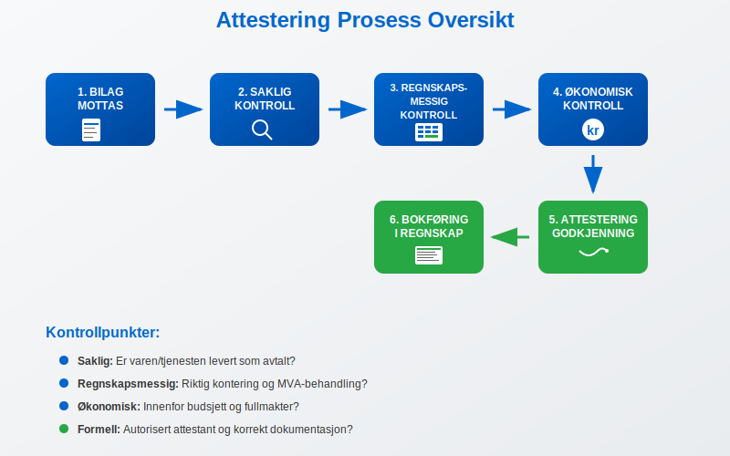
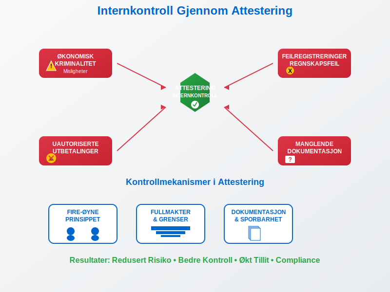
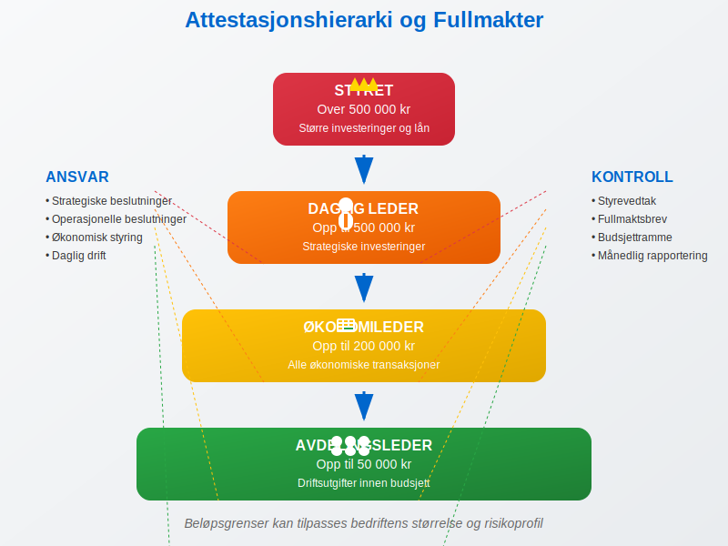
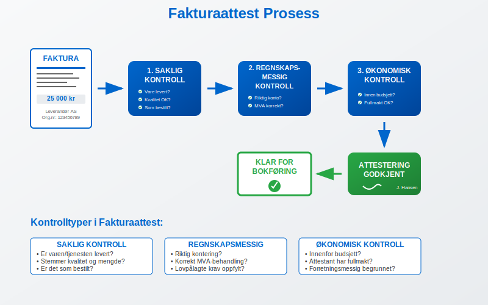
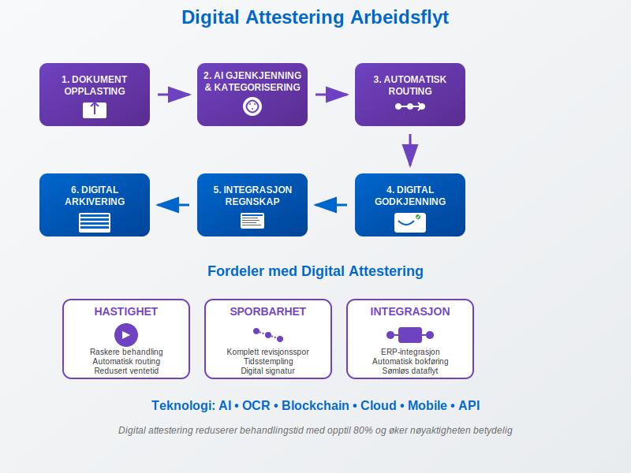
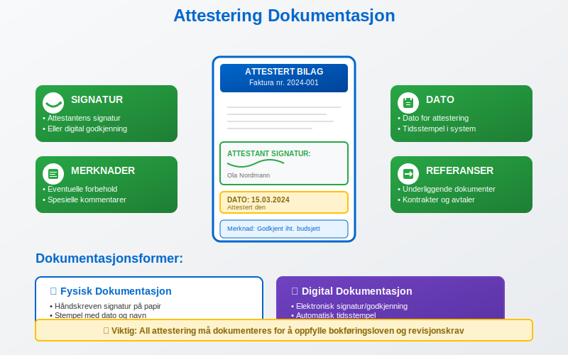
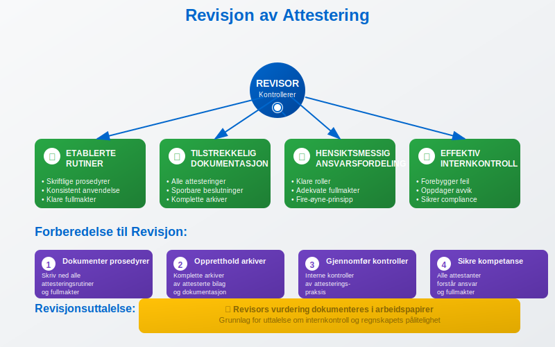
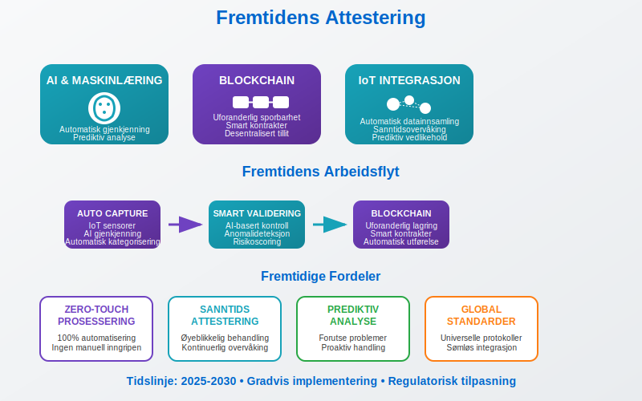

Attestering er en kritisk internkontrollprosess hvor autoriserte personer godkjenner og bekrefter at bilag, fakturaer og andre regnskapsdokumenter er korrekte, lovlige og i samsvar med bedriftens retningslinjer før de bokføres. Attestering sikrer at alle økonomiske transaksjoner er dokumentert, godkjent og sporbare. Effektiv attestering forutsetter systematisk bilagsmottak som grunnlag for korrekt dokumenthåndtering, og er en sentral komponent i QA (Quality Assurance) for å sikre kvalitetssikring av regnskapsprosesser.
Hva er Attestering?
Attestering er en formell godkjenningsprosess som innebærer at en autorisert person bekrefter at:
- Bilaget er ekte og korrekt
- Transaksjonen er forretningsmessig begrunnet
- Beløpet stemmer overens med avtaler og kontrakter
- Alle nødvendige dokumenter er vedlagt
- Transaksjonen er i henhold til budsjett og fullmakter

Juridisk Grunnlag
Attestering er forankret i bokføringsloven og regnskapsloven, som krever at alle regnskapsbilag skal være dokumentert og sporbare. Bedrifter må kunne vise til en klar godkjenningskjede for alle økonomiske transaksjoner.
Attestering som Internkontroll
Attestering fungerer som et internkontrollverktøy som beskytter bedriften mot:
- Økonomisk kriminalitet og misligheter
- Feilregistreringer og regnskapsfeil
- Uautoriserte utbetalinger
- Manglende dokumentasjon
Når avvik oppdages i attesteringsprosessen, er det viktig å ha etablerte rutiner for avvikshåndtering som sikrer systematisk identifisering, analyse og korrigering av feilene.

Fire-øyne-prinsippet
Mange bedrifter følger fire-øyne-prinsippet, hvor minst to personer må være involvert i godkjenningsprosessen:
- Bestiller/Mottaker - bekrefter levering og kvalitet
- Attestant - godkjenner betaling og bokføring
Roller og Ansvar i Attesteringsprosessen
Attestanter og Fullmakter
Bedrifter må etablere klare attestasjonsregler som definerer:
| Rolle | Attestasjonsgrense | Ansvar |
|---|---|---|
| Avdelingsleder | Opp til 50 000 kr | Driftsutgifter innen budsjett |
| Økonomileder | Opp til 200 000 kr | Alle økonomiske transaksjoner |
| Daglig leder | Opp til 500 000 kr | Strategiske investeringer |
| Styret | Over 500 000 kr | Større investeringer og lån |

Ansvarsfordeling
Bestiller har ansvar for:
- Å sikre at varen/tjenesten er levert som avtalt
- Kontrollere at fakturaen stemmer med bestilling
- Bekrefte at leveransen er i henhold til kontrakt
Attestant har ansvar for:
- Kontrollere at transaksjonen er innenfor budsjett
- Verifisere at alle nødvendige dokumenter foreligger
- Sikre at utbetalingen er i henhold til fullmakter
- Godkjenne bokføring på riktig konto
Typer Attestering
1. Fakturaattest
Den vanligste formen for attestering gjelder fakturaer og innkjøpsbilag. For en detaljert gjennomgang av hele prosessen for inngående fakturaer fra mottak til betaling, inkludert attestering og kontrollrutiner, se vår omfattende guide.
- Saklig kontroll - er varen/tjenesten levert?
- Regnskapsmessig kontroll - riktig kontering og MVA-behandling
- Økonomisk kontroll - innenfor budsjett og fullmakter?

2. Lønnsattest
For lønn og personalutgifter kreves spesiell attestering, inkludert særlig oppmerksomhet ved tungt salær hvor høye beløp krever forsterket kontroll og dokumentasjon:
- Kontroll av timeregistreringer
- Godkjenning av overtid og tillegg
- Verifisering av fravær og permisjon
- Attestering av reiseregninger
3. Bankattest
For bankutbetalinger og overføringer:
- Kontroll av mottakerinformasjon
- Verifisering av beløp og valuta
- Godkjenning av betalingsformål
- Sikring av dobbel signatur ved store beløp
Digitale Attesteringsløsninger
Moderne bedrifter bruker ofte digitale attesteringssystemer som automatiserer prosessen:
Fordeler med Digital Attestering
- Automatisk routing til riktig attestant
- Digital sporbarhet og revisjonsspor
- Raskere behandling av bilag
- Redusert papirbruk og arkivering
- Integrert med regnskapssystem

Integrasjon med Regnskapssystem
Digitale løsninger kan integreres med:
- ERP-systemer for automatisk kontering
- Bankintegrasjon for betalingsutførelse
- Arkivsystemer for dokumentlagring
- Rapporteringsverktøy for oppfølging
Beste Praksis for Attestering
Etablering av Attesteringsrutiner
- Definer klare fullmakter og attestasjonsgrenser
- Opprett skriftlige prosedyrer for attestering
- Implementer fire-øyne-prinsippet hvor det er hensiktsmessig
- Sørg for regelmessig opplæring av attestanter
- Gjennomfør periodiske kontroller av attesteringspraksis
- Integrer attestering i dagsoppgjør rutiner
Dokumentasjonskrav
Alle attesteringer må dokumenteres med:
- Attestantens signatur eller digitale godkjenning
- Dato for attestering
- Eventuelle merknader eller forbehold
- Referanse til underliggende dokumenter

Vanlige Utfordringer og Løsninger
Utfordring 1: Manglende Kompetanse
Problem: Attestanter mangler kunnskap om regnskapsregler
Løsning:
- Regelmessig opplæring i regnskapsføring
- Klare retningslinjer og sjekklister
- Støtte fra økonomiavdelingen
Utfordring 2: Tidspress og Forsinkelser
Problem: Attestering forsinker betalinger og leverandørforhold
Løsning:
- Digitale attesteringsløsninger
- Klare frister for attestering
- Stedfortredere ved fravær
Utfordring 3: Manglende Sporbarhet
Problem: Vanskelig å spore hvem som har attestert hva
Løsning:
- Digital attestering med automatisk logging
- Systematisk arkivering av attesterte bilag
- Regelmessige revisjoner av attesteringspraksis
Attestering og Revisjon
Revisors Kontroll
Revisor vil kontrollere at bedriften har:
- Etablerte attesteringsrutiner som følges konsekvent
- Tilstrekkelig dokumentasjon av alle attesteringer
- Hensiktsmessig ansvarsfordeling og fullmakter
- Effektiv internkontroll gjennom attesteringsprosessen
Revisors vurdering av attesteringsprosessene dokumenteres i arbeidspapirer, som utgjør grunnlaget for revisjonsuttalelsen om internkontrollen.

Forberedelse til Revisjon
For å være godt forberedt til revisjon bør bedriften:
- Dokumentere alle attesteringsprosedyrer
- Opprettholde komplette arkiver av attesterte bilag
- Gjennomføre interne kontroller av attesteringspraksis
- Sikre at alle attestanter forstår sitt ansvar og fullmakter
Attestering i Ulike Bedriftstyper
Små Bedrifter
I mindre bedrifter kan attestering være enklere, men like viktig:
- Daglig leder attesterer ofte alle større utgifter
- Ekstern regnskapsfører kan bistå med kontroller
- Enkle digitale løsninger kan effektivisere prosessen
Store Bedrifter
Større organisasjoner krever mer komplekse attesteringsstrukturer:
- Hierarkiske fullmakter med flere nivåer
- Spesialiserte attestanter for ulike områder
- Avanserte ERP-systemer med innebygd attestering
- Dedikerte internkontrollfunksjoner
Fremtiden for Attestering
Automatisering og AI
Teknologisk utvikling påvirker attesteringsprosesser:
- Automatisk gjenkjenning av bilagstyper
- AI-basert kontroll av bilagsinnhold
- Maskinlæring for å identifisere avvik
- Blockchain for uforanderlig sporbarhet

Regulatoriske Endringer
Nye krav kan påvirke attestering:
- Økt digitalisering av offentlige rapporter
- Strengere krav til internkontroll
- Standardisering av attesteringsprosesser
- Integrerte løsninger med Altinn
Konklusjon
Attestering er en fundamental internkontrollprosess som sikrer korrekt og lovlig behandling av alle økonomiske transaksjoner. Ved å etablere klare rutiner, bruke moderne teknologi og sikre kompetent personell, kan bedrifter oppnå:
- Redusert risiko for feil og misligheter
- Bedre økonomisk kontroll og oversikt
- Effektive prosesser som støtter forretningsdriften
- Trygghet for at regnskapet er korrekt og revisjonssikkert
God attesteringspraksis er ikke bare et lovkrav, men en strategisk fordel som bidrar til bedre økonomistyring og økt tillit fra interessenter, investorer og myndigheter.